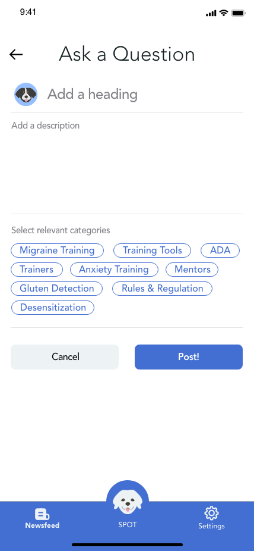

SPOT
"here to lend a helping paw"
Project Summary
Our chatbot design aims to fill in the information accessibility gap by providing a safe space to connect with other service dog handlers while acting as a source for unbiased, correct information.
1 Emphasize
We surveyed and interviewed service dog handlers about their process of obtaining/training such companion(s), as well as how they get their service animal related concerns resolved.
We also researched about service animal basics, and the common questions asked about service animals + the ADA. This is done with the aim to better understand our audience and the degree of accessibility/availability of information regarding service animals.
Common sources of misinformation in SD community
- Qualifying for a service dog
- Must have a “permanent” disability that could be helped by a service dog
- Must have a doctor’s note
- Certification
- There is no official certification required
- May optionally choose to get certified
- Training
- There is no official training required
- Handlers may owner-train, hire a trainer, attend group classes, or purchase a dog that is already trained
2 Define

- Most handlers owner-trained at least some of the time
- Difficult starting off
- Classes + trainers are expensive
- Misinformation is one of the biggest problems with existing resources
- Most handlers wished they had access to other trainers and more reliable information
- People still seek help when situations arise
- Every handler & SD’s situation is different; no one-size-fits-all
- “My first service dog was a disaster.”
- “I really wanted my dog to do well, when she doesn’t I get frustrated easily.”
- “Your dog is a partner, not just a tool.”
- “Service dog are a luxury”
- “ADA is too lenient and not understandable.”
3 Ideate
A forum to facilitate productive conversation between handlers and share news and a chatbot to help with common ADA questions and training resources.
- Chatbot helps with decoding the ADA
- App gives encouraging advice; Chatbot encourages the handler when hitting roadblocks, give encouragement and solution
- Chatbot has the persona of a dog - handlers can choose breed & name according to their own dog; more forgiving because it is as if their SA is talking
- Chatbot is a database of every credible source (ServiceDogCentral.org) + is updated regularly, News page for recent SA-related info
- “Secret chat” area with polls, articles, etc. Chats with other handlers will stay completely anonymous; Online community for service animal handlers to post what their animal can do + other info;App provides a safe space to ask questions without feeling gatekept
- Chatbot that debunks SA myths; App highlights that official certification is not needed
- App is specialized to owner’s disability-- regarding news page & task training
4 Prototype


5 Final Solution
